Development of full visual identity and Instagram content for a brand specializing in exclusive gifts, celebrations, and event organization. Created posts and carousels in a Quiet Luxury aesthetic with an Ambient Gradient style — featuring dark backgrounds, minimalistic layouts, and soft gradient accents. Built a cohesive visual language where each post feels like a page from a contemporary art magazine or a premium portfolio.
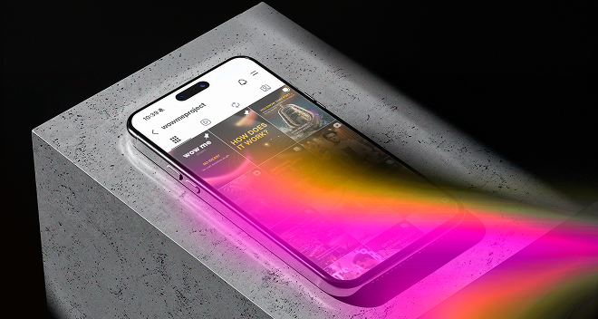
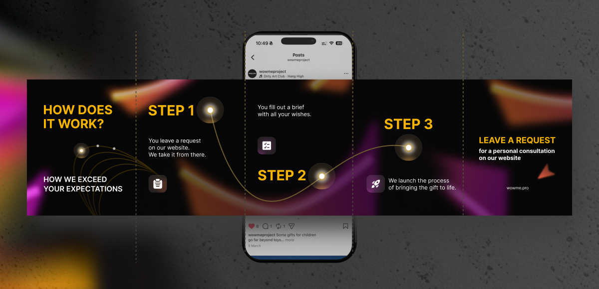
Instagram feed covers as part of a cohesive visual direction for the brand
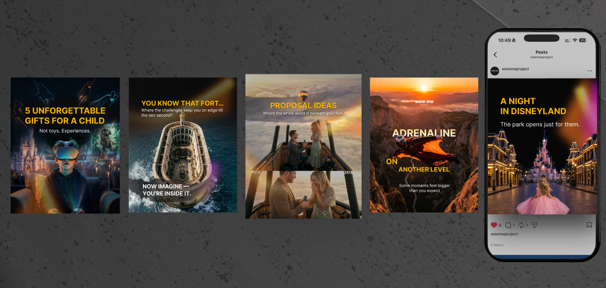
Visual design development for an Instagram oil shop, taking into account competitor analysis and target audience research. Created a stylish design that highlights product quality and attracts customers' attention.
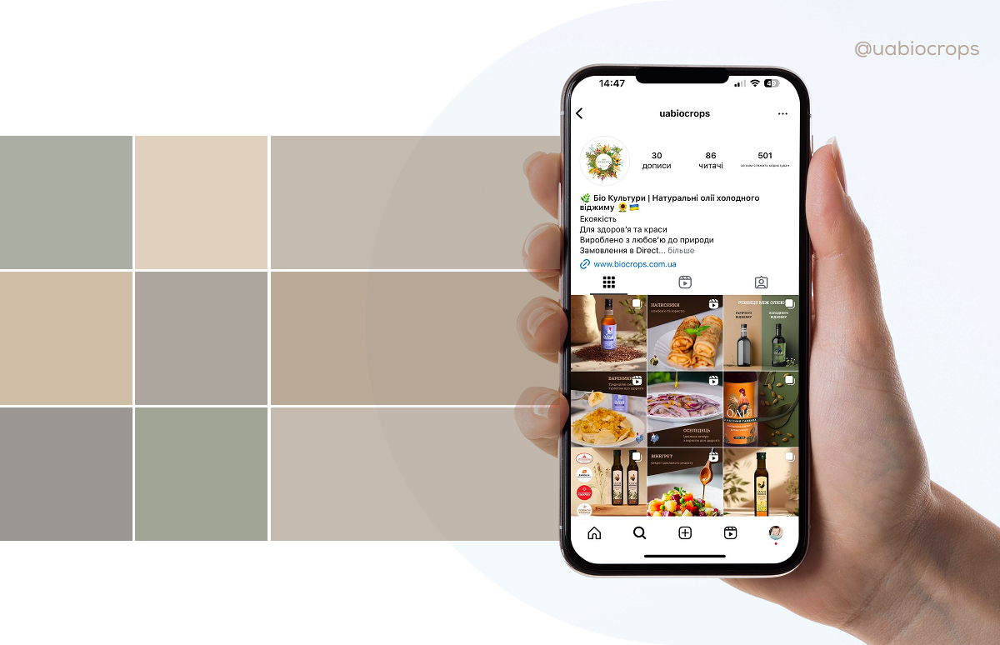
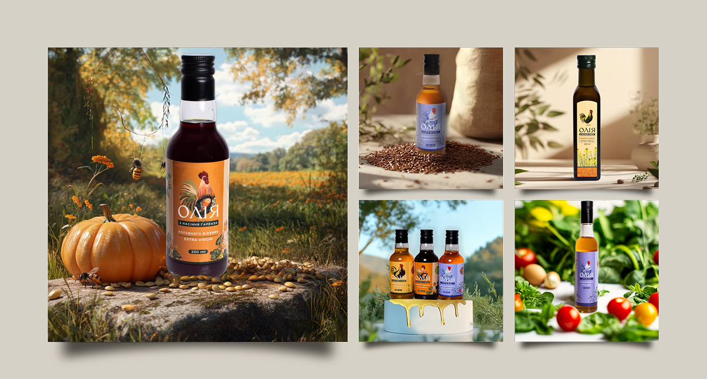
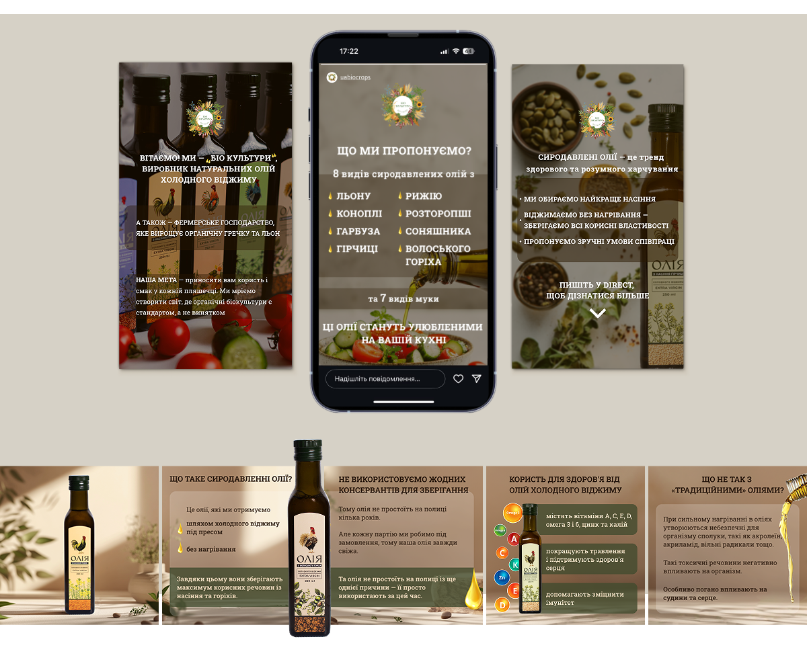
During my work at a marketing agency, I designed over 200+ banners for articles, social media, and promotional campaigns in the crypto and Web3 industry. Below is a small selection of adapted examples that showcase my design approach, typography, and visual style while respecting NDA limitations.
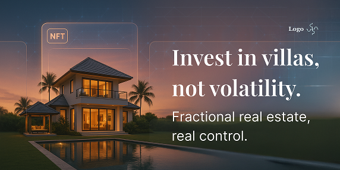
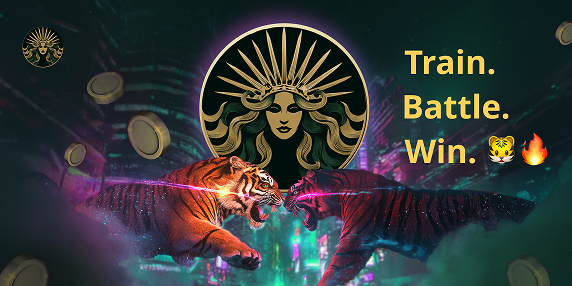
Adaptations for social media platforms, considering format-specific requirements and user behavior. Shown here in mock-up format to demonstrate real-life application.
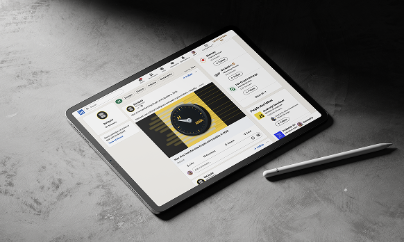
Most of my work in the crypto space is under NDA, so the examples shown are adapted. However, they reflect my ability to work with composition, typography, and color to create designs tailored for marketing and growth campaigns.
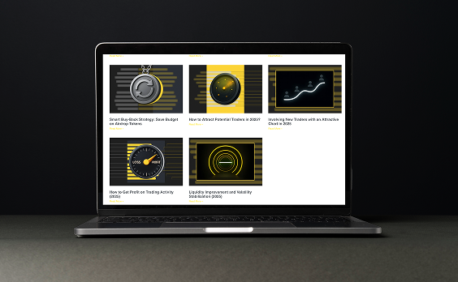
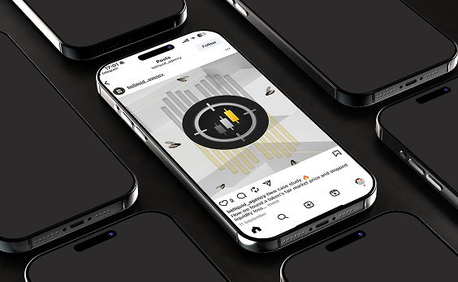